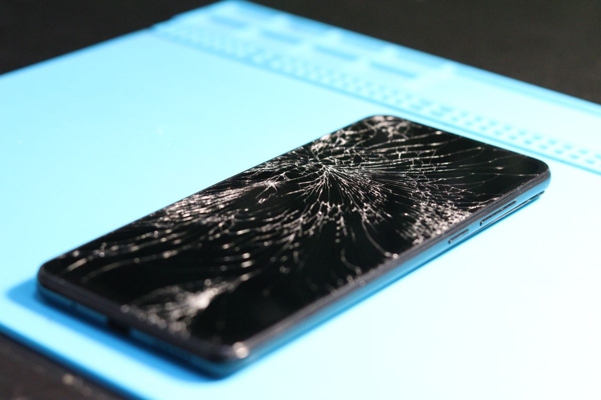
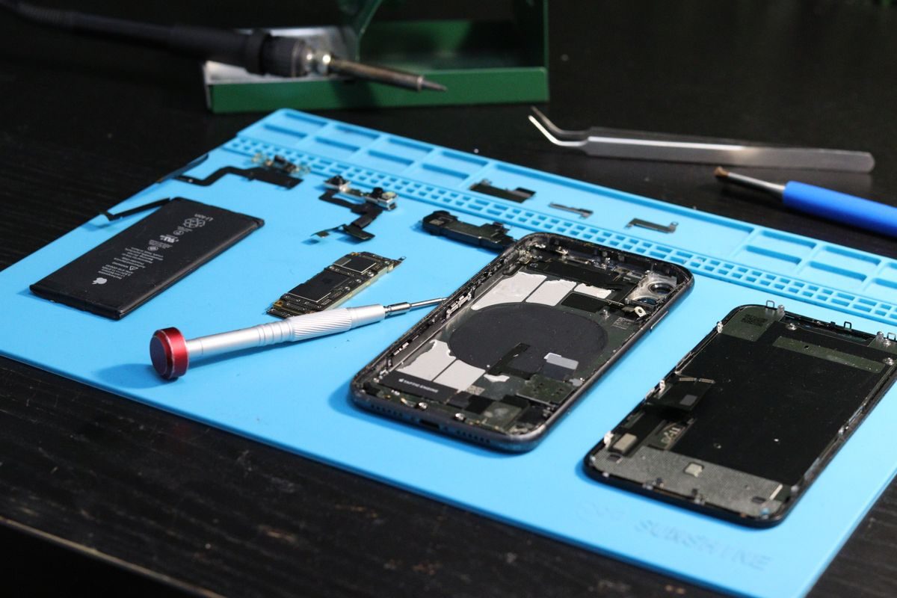
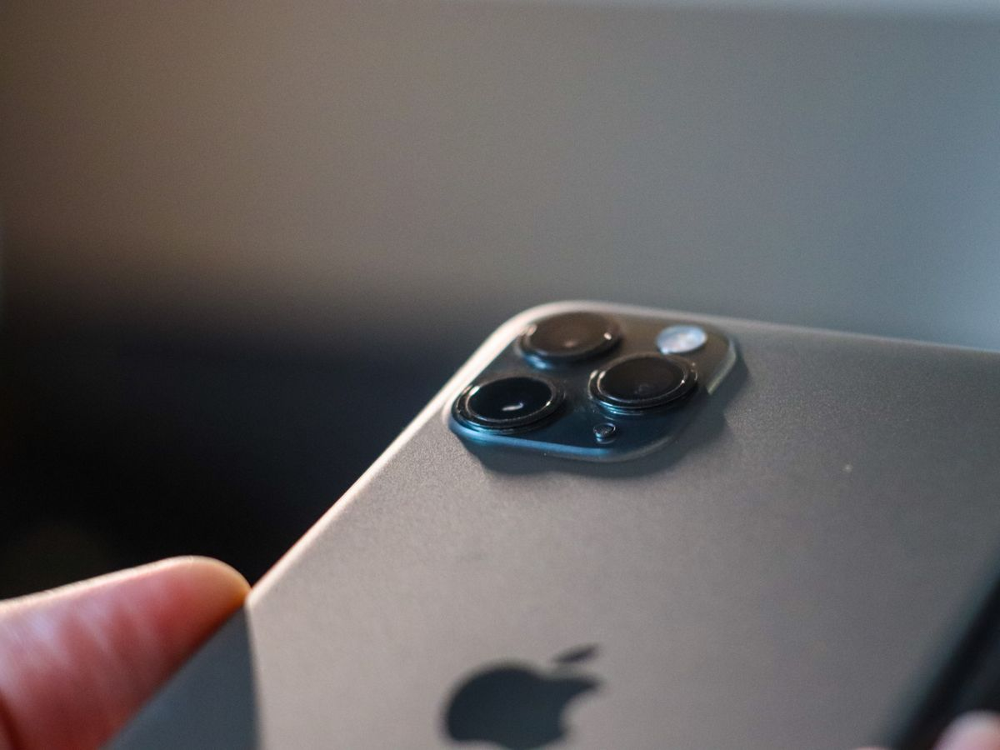
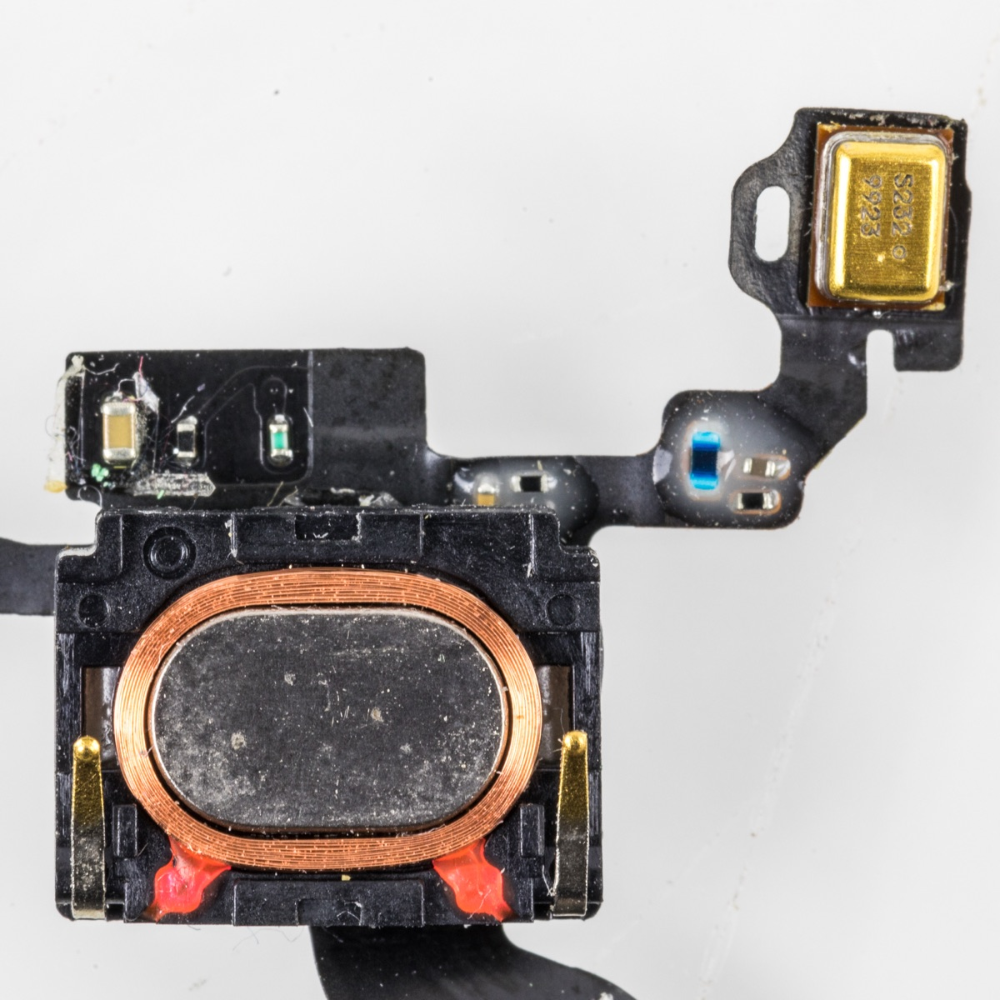

Screen Replacement
Cracks, lines, or touch that won’t respond. Find suitable display options for your exact phone.
Port & Pixel / Repair collection
Six services. One everyday essential.From the screen you see to the connections you rely on. Find the repair that gets your phone back into your day.
Not sure? Find your repair
Cracks, lines, or touch that won’t respond. Find suitable display options for your exact phone.

Rapid drain or unexpected shutdowns? Start with a battery-health check and a device-specific assessment.
Loose cable, interrupted charging, or no response. We check the connector and power path.

Freezes, app crashes, and repeated restarts. Review the software and backup options before any reset.

Blurred photos, a damaged lens, or a black preview. Get the camera and lens checked.

Quiet calls, distorted playback, or an unclear microphone. Let’s find the source of the sound problem.
Images illustrate repair categories; supported parts vary by model.
Before you book
No. Describe what you’re noticing and share your exact model. Assessment helps establish which repair makes sense.
The exact device, fault, and parts availability determine cost and timing. Confirm a model-specific estimate before agreeing to work.
No. It prepares a request locally for you to review and download. The shop must separately confirm your visit.
A little more life in your phone